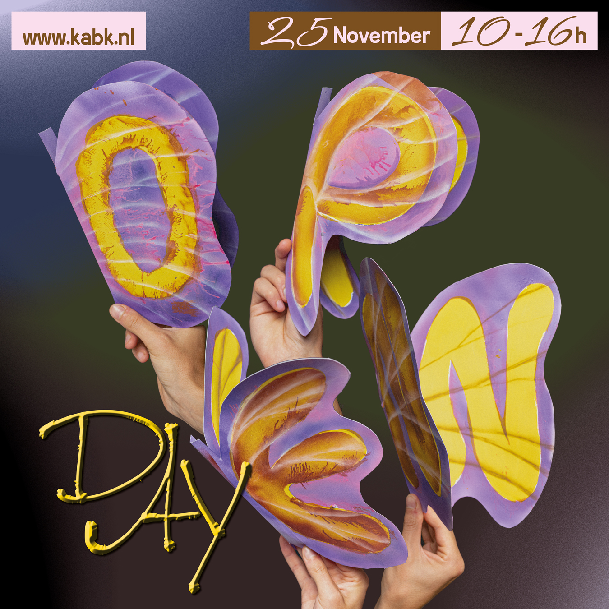
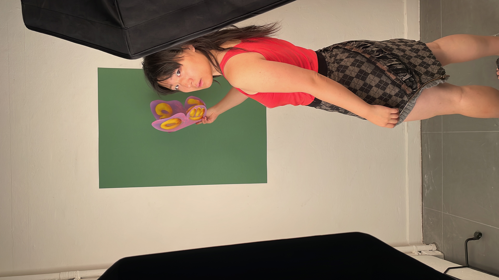
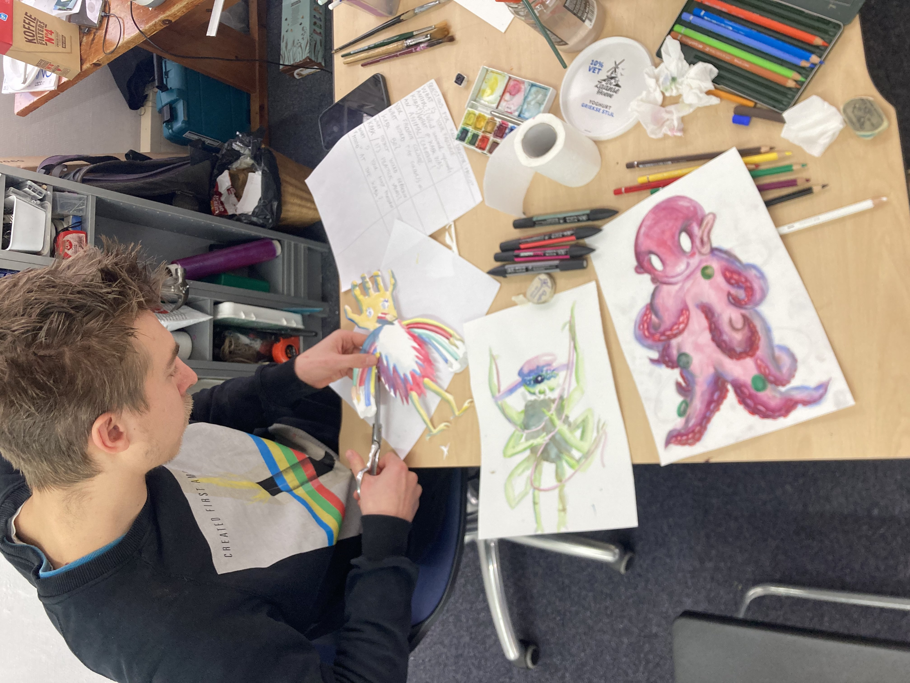
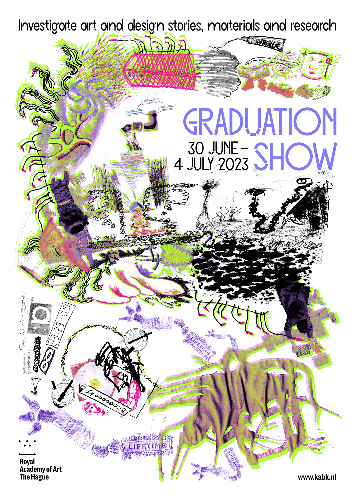
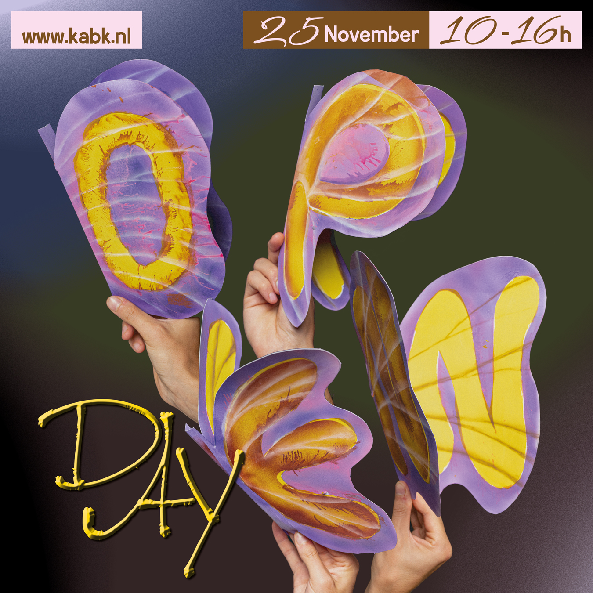
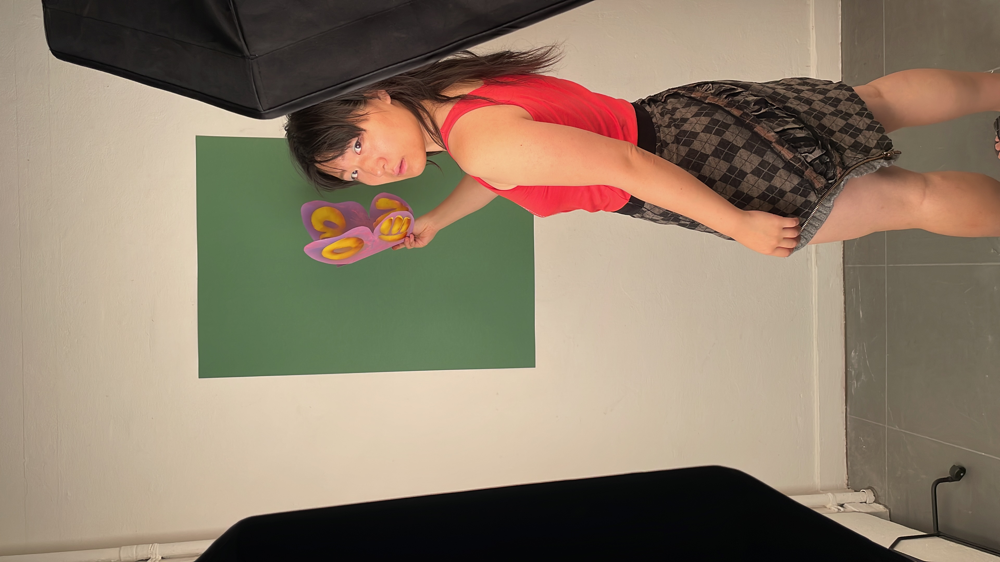
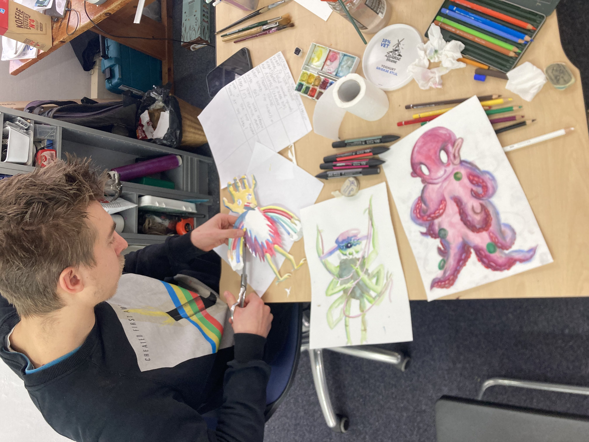
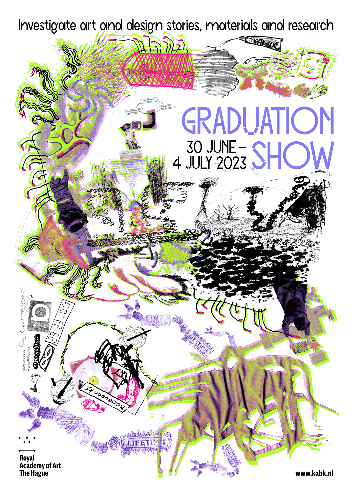

campaign design for KABK Graduation Show & Open Day 2023
2023
Last year me and Daniele Formica designed the campaign for 2023 Graduation Show and 2023 Open Day at Royal Academy of Art The Hague.
We facilitated a one-day drawing workshop for students to gather and draw collectively a centipede that could represent the indentity of their academy.
This centipede then evolved into a butterfly for the Open Day campaign.
I want to share our design and more importantly the process behind it. We liked the design, but we loved more the mess we made!
Design can be so much about collective hands that flap the butterfly’s wings.
 






